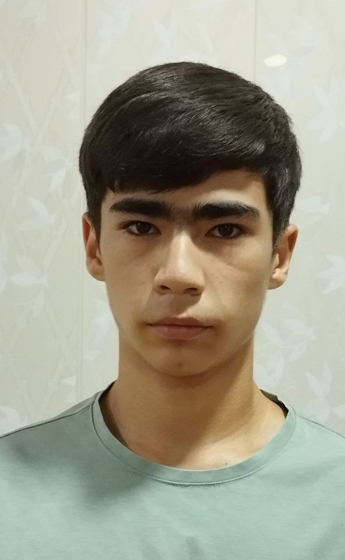

Gozikulov Samirbek
A story about Samir

Gozikulov Samirbek
Samir in 2023
Born:29.08.2007
Nicknames: The Tiger of uzbekistan
Weight:feather weight
Height:167sm
Wins:598
total fights:1159
Loses by KO:0
Wins by KO:10
Loses:561
Medal record:
15 gold
9 silver
9 bronze
Last year, I encountered a challenge outside of my schoolwork and my resilience and problem-solving skills helped me to deal with this problem. It all started when I decided to participate in an international Taekwondo competition that could have been a remarkable achievement in my sport career. I knew the preparation could be hard but the result would be worthy. While training, I faced numerous obstacles such as exhaustion, muscle pain, and self-doubt. However, the real challenge started when I injured my both ankles by kicking sandbag. Next day I could not even stand on my feet. At the very moment I thought about giving up on my goal but I did not.Luckily my mother is a nurse, she found a therapist. He strictly ordered me not to stand up for a total of 2 weeks and gave a list of medicine that could be used to make my healing faster. Yet it was not easy for me to lay on my bed while my opponents were working on themselves. My parents encouraged and motivated me. Then I had an idea that improved my battle IQ. The idea was to watch videos of my and other professionals' spars. In the end I became the champion of central Asia all thanks to the Allah.
Through this experience, I learned the importance of passion and determination. This challenge taught me that success is not only determined by natural talent but by one's ability to overcome difficulties through hard work and enthusiasm.
In conclusion, facing the challenge of participating in an international competition has been a priceless experience. It has taught me the essence of perseverance, goal-setting, seeking support from others, and maintaining a positive outlook even in the face of hardship.
An exchange program is an opportunity for personal growth, cultural immersion, and academic enrichment. To make the most of this experience, it is crucial for one to possess certain qualities and skills. Reflecting on my past 2-3 years, I can confidently say that my involvement in community service has prepared me for an exchange program.
One of the things that can help me to show off in this exchange program is my participation in an international Taekwondo competition. It was held approximately two years ago in Kyrgyzstan. By interacting with other people from various backgrounds, I learned to appreciate different cultures and understand the challenges faced by individuals from diverse cultures.
Taking part in this competition helped me to realize how my life alters If I ever go to another country. From that experience I developed my communication skills by interacting with my opponents who are from other countries. They were really friendly despite being my opponents. During that time, I had difficulties in engaging with local people because their culture and language are different from my own country’s. However, I still managed to have a conversation with them due to some similarities in our languages.
Moreover, collaborating with others enhanced my cooperative skills and determination to achieve our goals. I was the leader of my team so when we were abroad, I was responsible for my groupmates. I led them while looking around and I was the one who talked with local people. Through this experience I learned that responsibility and leadership are really important.
In conclusion, these attributes will undoubtedly assist me in making the most out of an exchange program by fostering cultural understanding, facilitating effective communication with peers from diverse backgrounds. My involvement in such event awakened my responsibility and leadership skills.